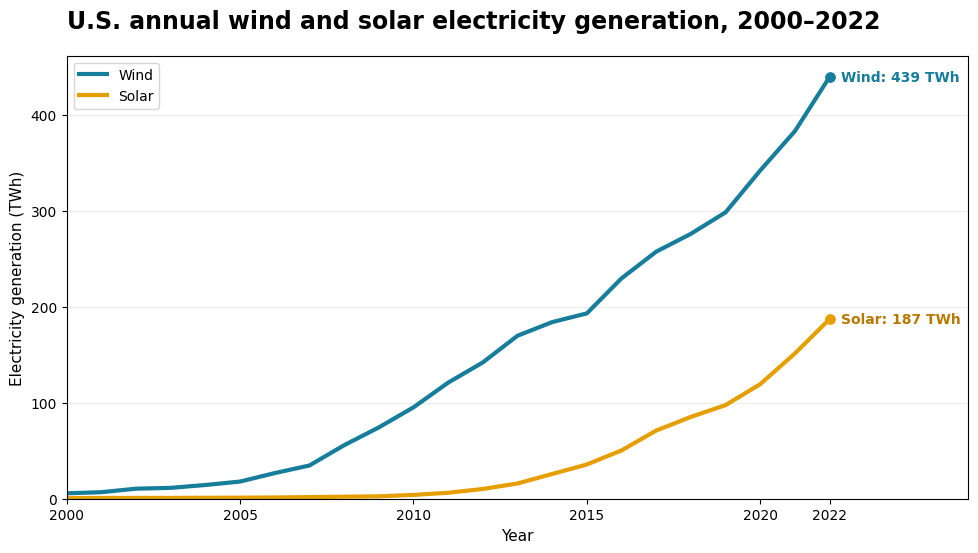
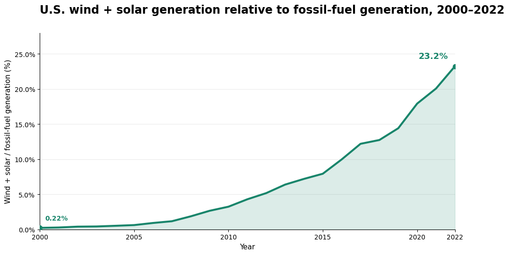
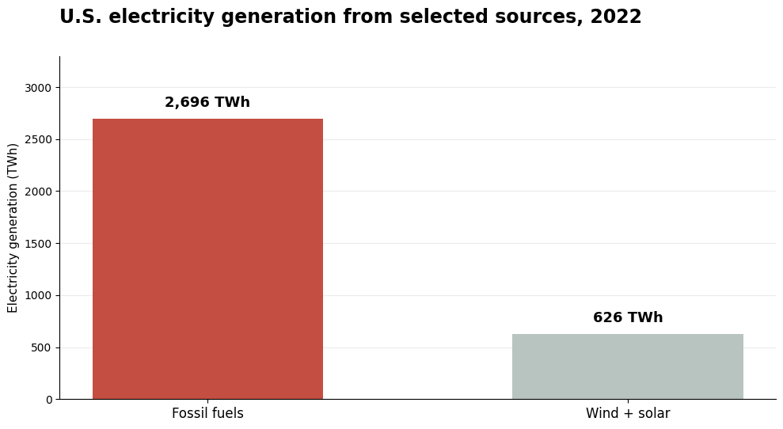
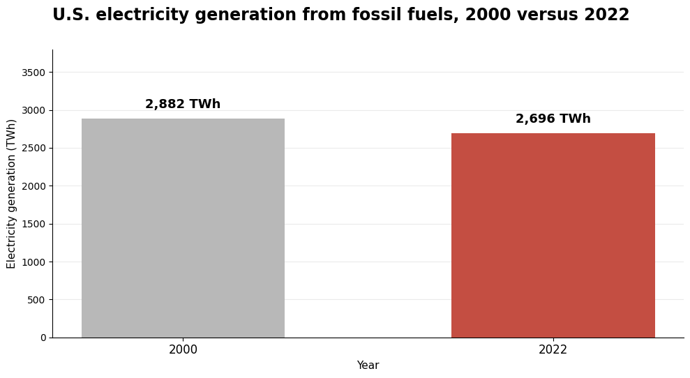

Proposition: The United States is making substantial progress toward a renewable energy transition.
The data comes from the IMF Climate Change Indicators Dashboard’s Renewable Energy dataset. These visualizations compare wind, solar, and oil in the United States. Energy values are converted to terawatt-hours (TWh).
FOR the Proposition


Design Decisions and Rationale:
- I focused on wind and solar to highlight the development of renewable energy. However, excluding fossil fuels makes it harder to judge their importance in the overall energy system.
- Showing percentage growth makes the increase look especially impressive. A small starting value can produce a large percentage increase, even when the absolute amount remains relatively small.
- Clear colors and annotations direct attention to renewable energy growth. Together, these choices encourage an optimistic interpretation of the transition.
AGAINST the Proposition


Design Decisions and Rationale:
- I included oil to provide context that was missing from the first set. This allows viewers to compare renewable energy growth with fossil fuel.
- Using values in TWh shows the size of the energy gap, rather than emphasizing percentage growth from a small starting point.
Final Reflection
I lean toward the second set because it shows that fossil-fuel generation remained large despite the growth of wind and solar. The first set of data presents the information in a selective manner. It highlights the growth in wind and solar power but omits the absolute scale of electricity generation from fossil fuels. Its persuasive headline and emphasis on the rising share may lead readers to overestimate the extent to which the United States has reduced its reliance on fossil fuels.